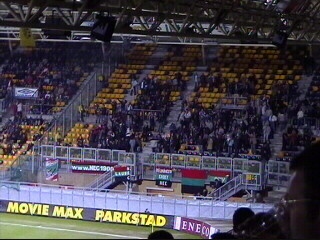
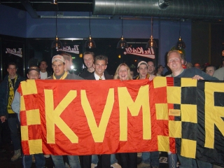

|
Roda JC - NEC (2-1) 22 maart 2003 |

Een "vreemd" soort casuals in het PLS....
Demouge scoort al na 59 seconden 0-1!

De slechts 150 NEC-fans vieren feest.
Roda kreeg steun van de bevriende supporters
van KV Mechelen.
Zowel Roda als NEC kregen in dit zeer boeiende
duel een aantal niet te missen kansen, hoewel....
Dat is mooi.
Vrije trap die niets oplevert.
Gespannen blik bij een aanval van Roda.
Alweer een afstandsschot van Filipovic, goed voor
een
wonderbaarlijke treffer!
Vrolijk!!
Met veel moeite bereikten we in de rust de KO
om deze Mechelnaars te vereeuwigen....
Nog in de eerste helft viel Sonko uit met een zeer
ernstige kwetsuur.

Op dat moment bewonderden wij nog deze mooie
Roda-sweater.
Ook deze mag er wezen!
Anastasiou wurmt de bal er in de 56e min. in!
Sittard maakt reclame in het PLS......!
De West Side Ultra's rekenen zich vast rijk.
Zuid ook.
Een bedankje aan de NEC-supporters zoals het
hoort.
Maar dit zien we liever.
Nog ideeën?
Deze supporter wilde graag zijn tattoo showen.
En toen kon Izz niet achterblijven.
Pe zonder tattoos maar met veel biertjes.
Het was echt gezellig met de Belgen!
Pat en Melleke horen bij het interieur :-)
Sport verbroedert, bier ook!
Okay, nog een tattoo.
Woef.

Kevin van Dessel.....
en......
Ioannis Anastasiou waren de afgevaardigden van
de selectie in de KO.
Op de heenweg werden we in Koningsbosch
ge-lasergunned. Op de terugweg wachtte ons ter
hoogte van het stadion een alcoholcontrole.
© Koempels
Pleasure Dome